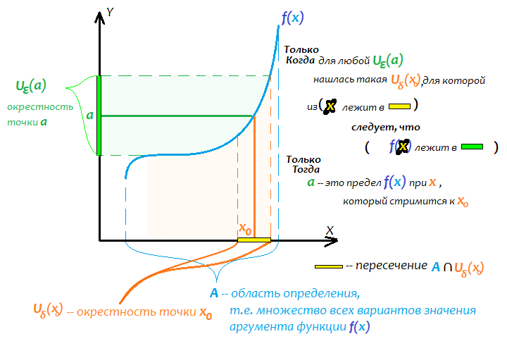

$$\color{red}(\color{black}\lim_{x\to x_0} f(x) = a\color{red})\color{black} \iff \color{red}(\color{black} \forall U_\varepsilon (a).\color{violet}(\color{black} \exists U_\delta (x_0).\color{green}(\color{yellow} ( \color{black} x\in U_\delta (x_0) \cap A \color{yellow} ) \color{black} \Rightarrow \color{yellow}(\color{black} a\in U_\varepsilon (a) \color{yellow} ) \color{green} ) \color{violet} ) \color{red} ) \color{black} $$
Со скобками
тогда и только тогда,
когда для любой \(\href{locality_x0}{U_\varepsilon(a)}\)(окрестности точки-результата вычисления),
существует такая \(\href{locality_x0}{U_\delta(x_0)}\) (окрестность точки-аргумента),
что
из того, что \(\href{mathbbR.html}{x}\) находится в пересечении области определения \(\href{set.html}{A}\) функции и \(\href{locality_x0.html}{U_\delta(x_0)}\) (окрестности точки-аргумента)
следует, что \(\href{func.html}{f(x)}\) лежит в \(\href{locality_x0.html}{U_\varepsilon(a)}\)(окрестности точки-результата вычисления)

Если в привёдйнном определении, \(\varepsilon\)-окрестности заменить на окрестности, получится эквивалентное определение.
К слову. Как на место \(\href{mathbbR.html}{x_0}\), так и на место \(\href{mathbbR.html}{a}\), можно ставить как конечные значения, так и бесконечные (\(+\infty, -\infty, \infty\)).
То есть на \(2\) места, \(4\) варианта. Это \(2^4=16\) вариантов определения в одном.